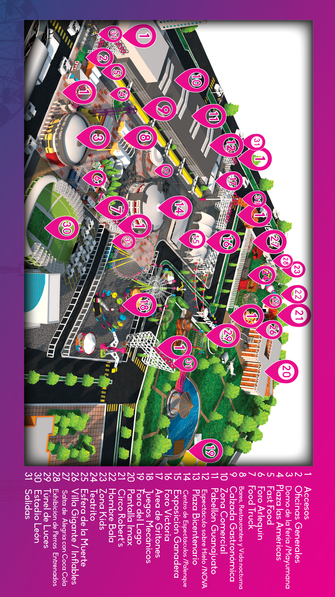

<div class=" no-navbar no-toolbar views">
  <!-- Your main view, should have "view-main" class -->
  <div class="view">
    <!-- Top Navbar-->
    <div class="navbar theme-teal" style="background-color:#fc9a00 !important">
      <div class="navbar-inner">
        <div class="left sliding">
          <a href="#" class="back link" style="z-index:300;"> </a>
        </div>
        <div class="center sliding">
              
        </div>
      </div>
    </div>
        <!-- Pages container, because we use fixed-through navbar and toolbar, it has additional appropriate classes-->
        <div class="pages ">
            <!-- Page, "data-page" contains page name -->
            <div  class="page  no-toolbar" data-page="total">
                <!-- Scrollable page content -->
                <div class="page-content" style="background:url(img/background.jpg); !important;">
                  
                </div>
            </div>
        </div>
    </div>
</div>
